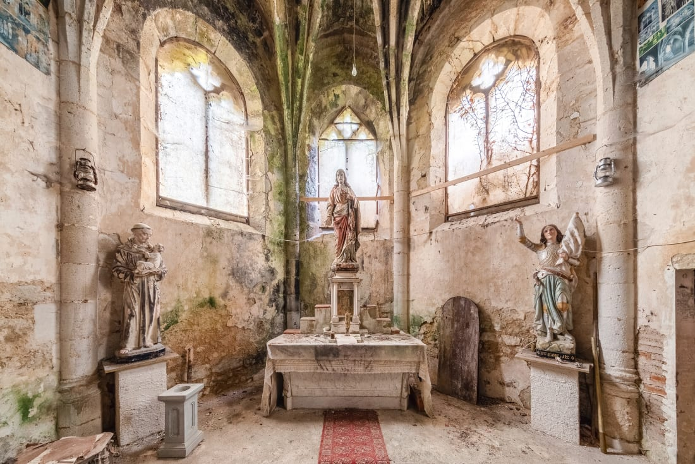
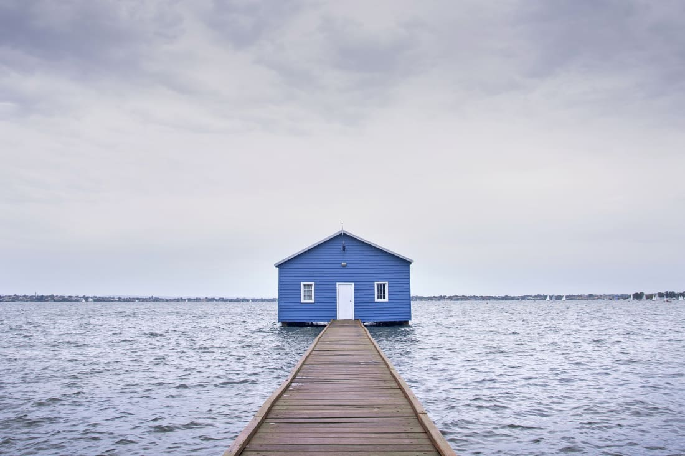
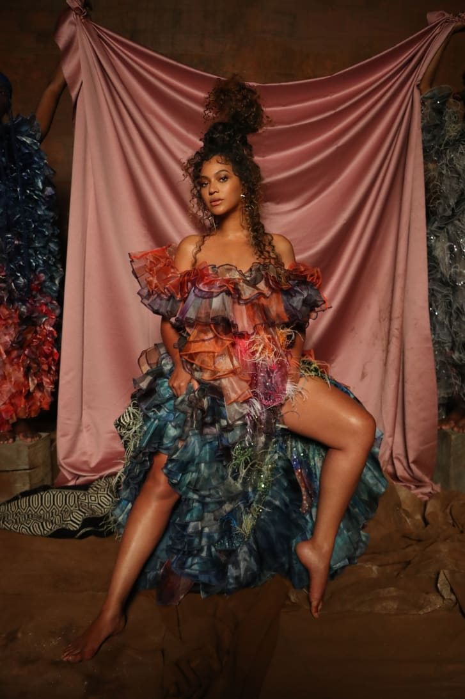

Inside Europe's stunning abandoned churches
 Across Europe, hundreds of churches that were once filled with worship and song are now at the mercy of the elements. With religion's role declining sharply around the continent in recent decades, the most promising outcome for many of these centuries-old structures is being reincarnated as residential or commercial properties. Hoping to capture their faded splendor before it's too late, French photographer Francis Meslet has spent almost a decade documenting abandoned churches, chapels and priories in varying states of disrepair. His stunning images show dilapidated pipe organs, overgrown cloisters, long-empty pews and sunlight pouring into naves strewn with dust and rubble. "I am interested in the hold of passing time on architecture -- how a building tries to survive abandonment, inclement weather and time," he said over email. Featuring images shot across France, Belgium, Germany, Italy and Portugal, his new book, "Abandoned Churches: Unclaimed Places of Worship," offers an eerie tribute to a building type he describes as "very special in the history of architecture and the history of men." Meslet, who once wanted to be architect, has a sharp eye for structural symmetry, with his collection spanning styles from gothic to neoclassical.Real-world locations straight out of a Wes Anderson movie
 Rounded edges, pastel colors and satisfying symmetry -- there is something unmistakable about a Wes Anderson movie. For more than two decades, the director has crafted a unique aesthetic through quirky films like "The Royal Tenenbaums," "The Life Aquatic with Steve Zissou," and "The Grand Budapest Hotel." So, when travel enthusiast Wally Koval began noticing real-world locations that looked straight out of a Wes Anderson movie, he started an Instagram account in 2017 to document them all. Three years and 1.3 million followers later, @accidentallywesanderson boasts over 1,200 submissions from around the world. Despite its seemingly niche brief, the cult account features everything from minimalist lighthouses to grandiose hotels, from Art Deco bathhouses to mountain cabins. All, however, are distinctly reminiscent of Anderson's oeuvre. "He has created these very specific worlds, these fantastical worlds that are very perfectly placed," Koval explained in a video interview. "They feel otherworldly, to a degree. They're real, but they're not right. They could exist at any point in time, or any place, potentially."How Beyoncé-approved stylist Daniel Obasi is using fashion to create limitless futures

Daniel Obasi is a believer in the power of Instagram. The multi-talented creative -- who has shot portraits for the New York Times and Billboard, and styled fashion editorials for Vogue Portugal and Dazed -- has long used the platform as a way to connect with like-minded talents from the worlds of art and fashion.
Last year, it connected him with his most famous collaborator yet. "I got a DM from (Kwasi Fordjour), the creative director for Beyoncé, saying he would be interested in having me on this project that's coming up," Obasi recounted over the phone from Lagos. "Then he said, 'Oh, it's for Bey,' and I was like, 'I'm sorry, what?'"